Reverse Engineering an LED Display
 Feeling sassy.
Feeling sassy.
Table of Contents
Backstory
Last September, my brother came to me with a conundrum: the controller for a high-power LED timer he had been using to run our local community surfing competitions had been stolen. To make matters worse, the original manufacturer wanted more than $1,000 to replace it – a sum which far exceeded the modest budget of the nonprofit organization for which he volunteers, the South Bay Boardriders Club (SBBC). With competitions scheduled to resume in just a few months, they were at a loss for what to do.
{kind=link}
LED timer in action at a surf competition in Manhattan Beach, CA.
I told them I couldn’t make any promises, but I’d have a look. I proceeded to take apart the LED display box and inspect the copper traces on the manufacturer’s printed circuit board (PCB) using my backpacking headlamp. I identified the power source, microcontroller, and an array of shift registers. I realized that if I could carefully remove the manufacturer’s microcontroller, and replace it with one of my own, I could inject serial data into the shift registers to control each of the 30 LED channels.
I didn’t want to replicate the prior controller architecture, I wanted to make it better. So, I made it wireless and waterproof. I also added custom toggle buttons to improve the end-user’s experience. I soldered the requisite wires into through holes on the manufacturer’s PCB, covered the joints with conformal coating, and ran a sequence of tests to identify any bugs in my software. The controller worked flawlessly, and my total bill of materials was an order of magnitude less than the manufacturer’s quote – about $135.
{kind=link}
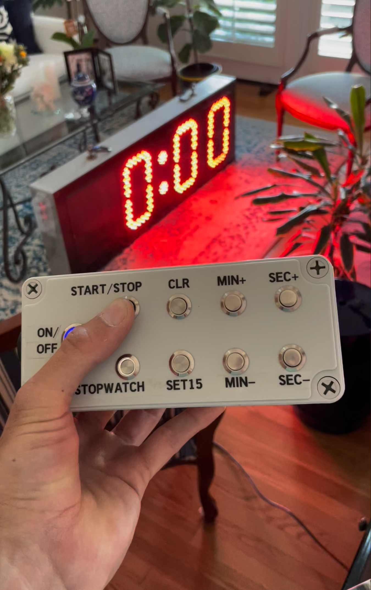
Topics Not Covered
This project involved a few microcontroller flourishes that I chose not to cover:
- Wireless communication using the ESP-NOW protocol
- Reducing power consumption using deep-sleep mode
- External hardware interrupts
- Shift register control
I decided not to cover these topics in detail because fantastic resources already exist online. Instead, I decided to focus mostly on the narrative journey, and provide some insight into my thought process as I worked through the problem.
If you’re interested in learning more about microcontrollers and hobby electronics, I’d highly recommend checking out the DroneBot Workshop channel on YouTube. Bill is a fantastic educator, and one of my favorite engineering content creators.
If you are curious about my specific implementation, feel free to reach out.
Methodology
One of the most important lessons I learned in graduate school was the value of breaking large, complex problems into a sequence of simpler ones with measurable outcomes. This framework permits incremental progress, and reduces the likelihood that you’ll waste a bunch of time on a problem you can’t actually solve. This was my first guiding principle:
When I first got my hands on the LED timer, I had no idea whether I’d actually be able to fix it. There were so many uncertainties:
- What is the power and control architecture inside the box?
- Will I be able to make sense of the manufacturer’s PCB?
- Could I modify the manufacturer’s PCB without destroying it?
- Is the power system functional?
- Could I write a software program that mimics countdown timer logic?
- How might I allow the end-user to control the timer in an intuitive manner?
I took a deep breath, and started breaking down the problem, working backwards from my desired endpoint.
I knew I wanted to build a wireless controller with an array of buttons that would allow an end-user to set, start, stop, and reset the LED timer; but, before fussing over wireless capabilities, I needed to make sure I could build a wired controller, and write a simple countdown timer program; before I could do that, I needed figure out a way to illuminate each of the 30 LED channels independently; before that, I needed to figure out how the LEDs were being controlled; and before that, I needed to figure out how the LEDs were being powered.
Soon, a mental map of the problem began to take shape:
- Fix Display
- Inspect Hardware
- Power Supply
- Shift Registers
- Microcontroller
- PCB Traces
- Modify Hardware
- ?
- Write Software
- Timer Logic
- Button Logic
- Sleep Mode
- Wireless
- Build Controller
- Enclosure
- Microcontroller
- Battery
- Buttons
- Charging Port
Inspect Hardware
I knew needed to make sense of the electronic architecture of the display box – if I couldn’t figure out how the display was supposed to work, well then I obviously wouldn’t be able to modify it without wrecking it. So, I opened the four access panels on the box, and started poking around.
{kind=link}
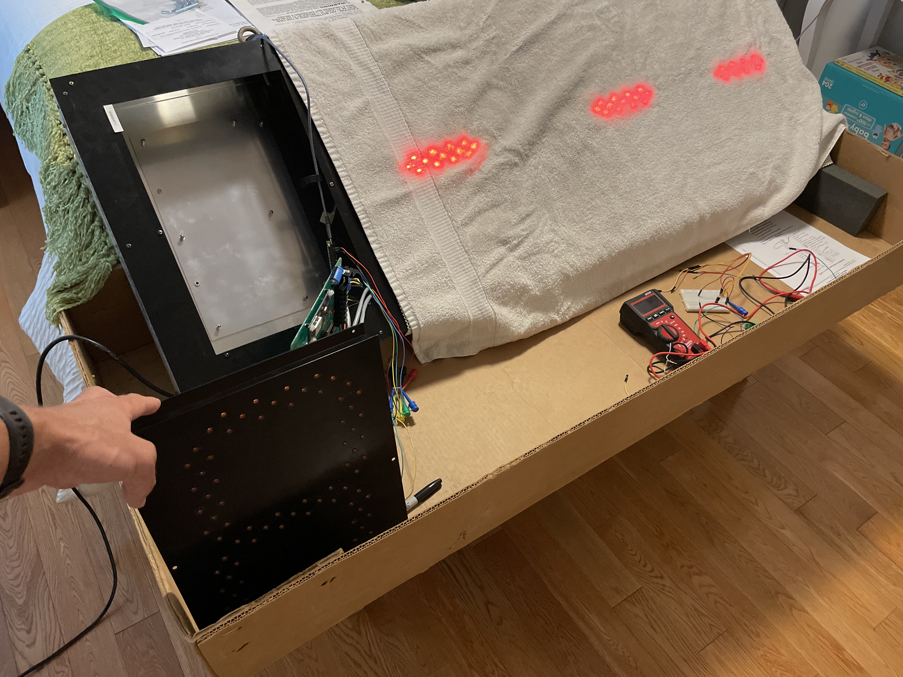
My first look inside the display box; after nearly going blind, I draped a towel over the front of the box to attenuate the LED intensity.
My high-level goal at this point was to figure out where I might be able to break into the usual chain of command in a minimally-invasive manner. This was another one of my guiding principles:
The manufacturer’s PCB was gorgeous: they included capacitors and diodes in the power circuits to ensure clean, unidirectional current flow; all of the soldered joints were covered in conformal coating; and the wire harnessess were all professional-grade. Somebody clearly put a lot of thought into the layout, and I really didn’t want to mess with it. Instead, I was hoping I might be able to overwrite the manufacturer’s firmware, and leave the PCB completely intact. Turns out, that wasn’t going to be possible, but more on that later.
{kind=link}
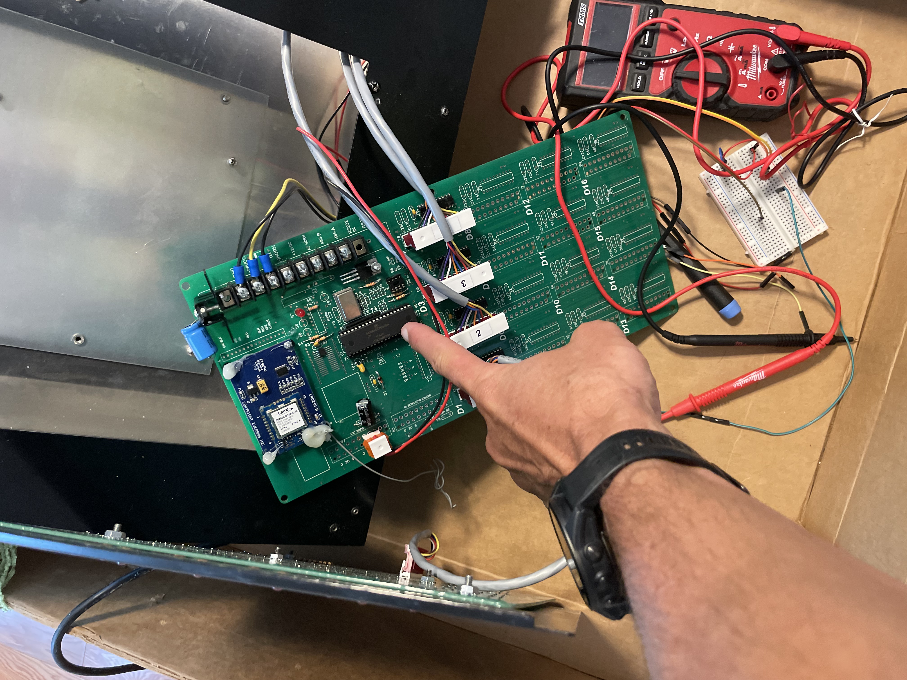
Initial inspection of the manufacturer’s printed circuit board (PCB), with annonymous finger pointing at the microcontroller.
Before anything else, I wanted to make sure that the display box was still capable of delivering power to the LEDs.
Power Supply
When inspecting a new piece of hardware, I generally like to start with the power system – it is the least ambiguous and easiest to identify. The external power cable is typically connected to a power supply, which contains a rectifier that converts alternating current (AC) to direct current (DC). Once I found the power supply, I identified positive voltage and ground wires, and traced them to the PCB. The output voltage is almost always specified on the power supply, but it is nevertheless good practice to verify it with a multimeter.
{kind=link}
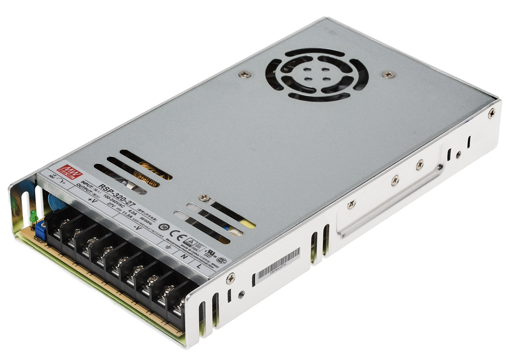
A 27V power supply.
I plugged in the display box, and immediately heard the power supply fan roar to life. A default pattern of LEDs illuminated. So far so good. The power supply was outputting 27 VDC, which I found somewhat curious – most devices run on 5V, 12V, or 24V. Turns out, there was a very good reason for this. I noticed that each LED channel was composed of 13 individual LEDs, connected in series. All LEDs are designed to operate within a nominal voltage range, and a quick search on DigiKey indicated that these LEDs preferred to run at 2.1V.
What is 27 Volts, divided by 13 LEDs? 2.08 Volts per LED. Not a coincidence.
I also noticed a secondary pair of power wires which were routed from the main power supply to the PCB via a 5V battery eliminator circuit, or BEC. A BEC is a small onboard voltage regulator that draws power from a device’s main power source, and steps it down to a stable, lower voltage to safely run sensitive electronics like microcontrollers. I made a mental note of the 5V input on the PCB – eventually, I would probably need to find a place to tap into this voltage source to power my own microcontroller.
Microcontrollers
Have you ever wondered how modern consumer applicances work?
What actually happens when you push the buttons on your microwave oven, or turn the dial on your washing machine? How do these actions actually control the device? If you aren’t an electrical engineer, you might assume that whatever is going on behind the scenes is far beyond your understanding. Well, I can assure you, it isn’t!
Hiding behind almost every electronic device is a single key component: a microcontroller. A microcontroller is essentially a simple computer that continuously measures electrical signals (inputs) to sense its environment, makes decisions based on those inputs, and generates electrical signals (outputs) to control actuators or communicate with other devices. If an electronic device is a football team, the microcontroller is the quarterback: it coordinates all the peripherals (i.e., sensors, actuators, displays) using predefined communication protocols.
{kind=link}
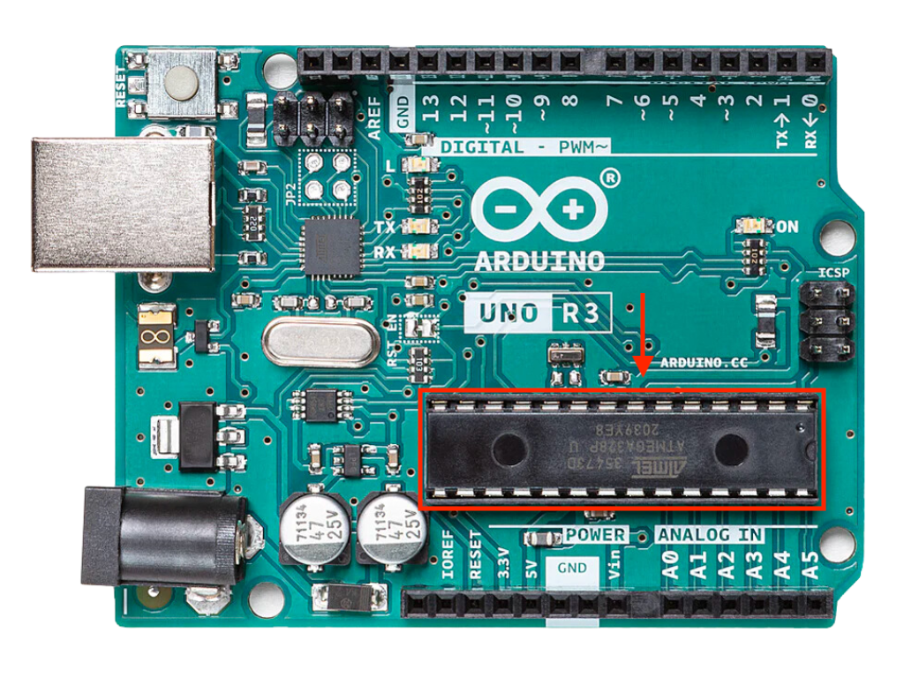
An ATmega328P microcontroller (outlined in red) on an Arduino UNO printed circuit board.
It really is as simple as that! Once you start looking, you’ll see these everwhere – in your kitchen, in your car, and even on your body. Indeed, smartwatches contain very small microcontrollers that read data from embedded sensors and specify which pixels to illuminate on the watch face. Basically any time you see a device with buttons, switches, or LED indicators, you can be reasonably sure that there is a microcontroller nearby.
This fact has an exciting corollary: if you know how to program microcontrollers, you can control almost any electronic system. This is honestly insane. Microcontrollers allow you to build everything from home security networks to automated drip-irrigation systems for your houseplants. You can design party costumes with embedded LEDs that react to light, sound, and heat signatures. You can build custom weather stations. You could design a remote-controlled actuator to open and close a window, or deploy a retractable sun shade. The possibilities are functionally infinite.
If you want to learn how to do this, there is no shortage of tutorials online (check out DroneBot Workshop). If you like working on little personal projects, I promise it is worth your time.
Without an understanding of microcontrollers, there is no chance I would have been able to build a controller for this LED display. Again, this would be like trying to run a play in football without a quarterback – the center would hike the ball into the clear blue sky, and the play would be over.
{kind=link}
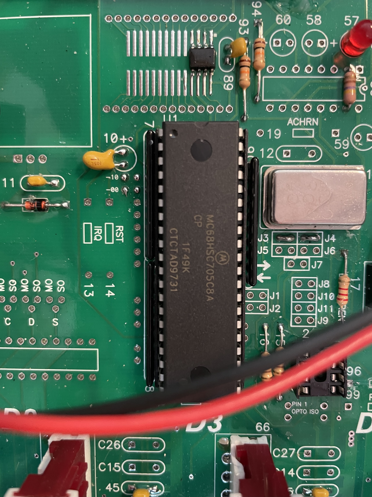
Computer, enhance! A close-up image of the OEM microcontroller. The alphanumeric code on this chip helped me identify the microcontroller, and find its corresponding data sheet. The chip pinout diagram allowed me to zero in on a subset of ports that could be used for LED control.
After I had located the microcontroller on the PCB, I knew I would need to identify the pins that were being used to control the LEDs. Once I figured this out, I could either:
- Leave the OEM microcontroller in place, overwrite the firmware, and send commands to these pins.
- Yank out the OEM microcontroller, replace it with one of my own, and inject my own signals (the specific nature of these signals was still TBD).
There were a few ways of going about this. The easiest was probably to connect each pin to an oscilloscope and look for a digital signal, but I didn’t have an oscilloscope. Back to the drawing board. The alphanumeric code printed on the microcontroller indicated that it was a MC68HSC705C8A, manufactured by NXP Semiconductors. I pulled up the pinout diagram, and began a process of elimination.
{kind=link}
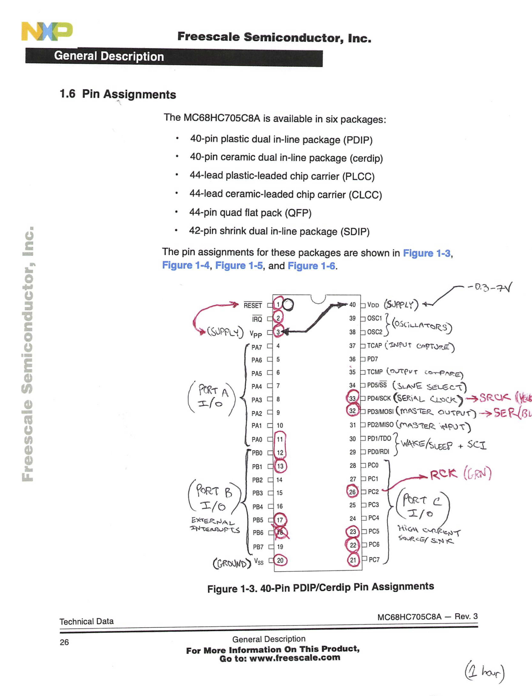
Using this pinout diagram, I was able to eliminate a number of pins from consideration; moreover, it revealed the location of the microcontroller’s designated serial output ports – these became my prime suspects.
Once I had narrowed my search to five or six pins, I used my multimeter to check if any of them exhibited any electrical activity – I wouldn’t be able to resolve the shape of digital signals, but I’d at least be able to see the voltage jumping around. After a few rounds of this, I had a fairly good sense of which GPIO pins were being used for LED control.
The precise means by which the LEDs were being controlled was still somewhat unclear to me, but I was making progress. I knew the command signals originated from the microcontroller, and I knew which ports were being used to issue those commands. I knew that a high-power LED display like this one couldn’t be powered directly by a microcontroller, so I expected to see an array of relays or other electronic switches further downstream. But, confusingly, I didn’t see anything on the PCB that looked like a relay – much less 30 of them. Something else was going on.
Shift Registers
Microcontrollers have a limited number of so-called general purpose input-output (GPIO) pins. These GPIO pins are the physical ports where the microcontroller interfaces with sensors, actuators, and displays. For most simple projects, the handful of GPIO ports built into the microcontroller are more than sufficient; however, some electronic devices require hundreds (e.g., automotive control), thousands, or even millions (e.g., 4K LED display) of outputs.
When the number of required outputs exceeds the number of GPIO pins on the microcontroller, a device called a shift register can come in handy. From a functional perspective, shift registers are incredibly simple: they have a sequence of memory slots that can hold a single binary bit (i.e., either a 0 or a 1); when a new bit is introduced at the “front end”, all the other values shift over by one slot, and the oldest value gets bumped out. Importantly, the state of each memory slot can be read simultaneously. You can think of a shift register as a marquee billboard, wherein new tiles can only be added from the lefthand side: each time a new tile is added, all the other tiles shift to the right, and the oldest tile is knocked off the end.
{kind=link}
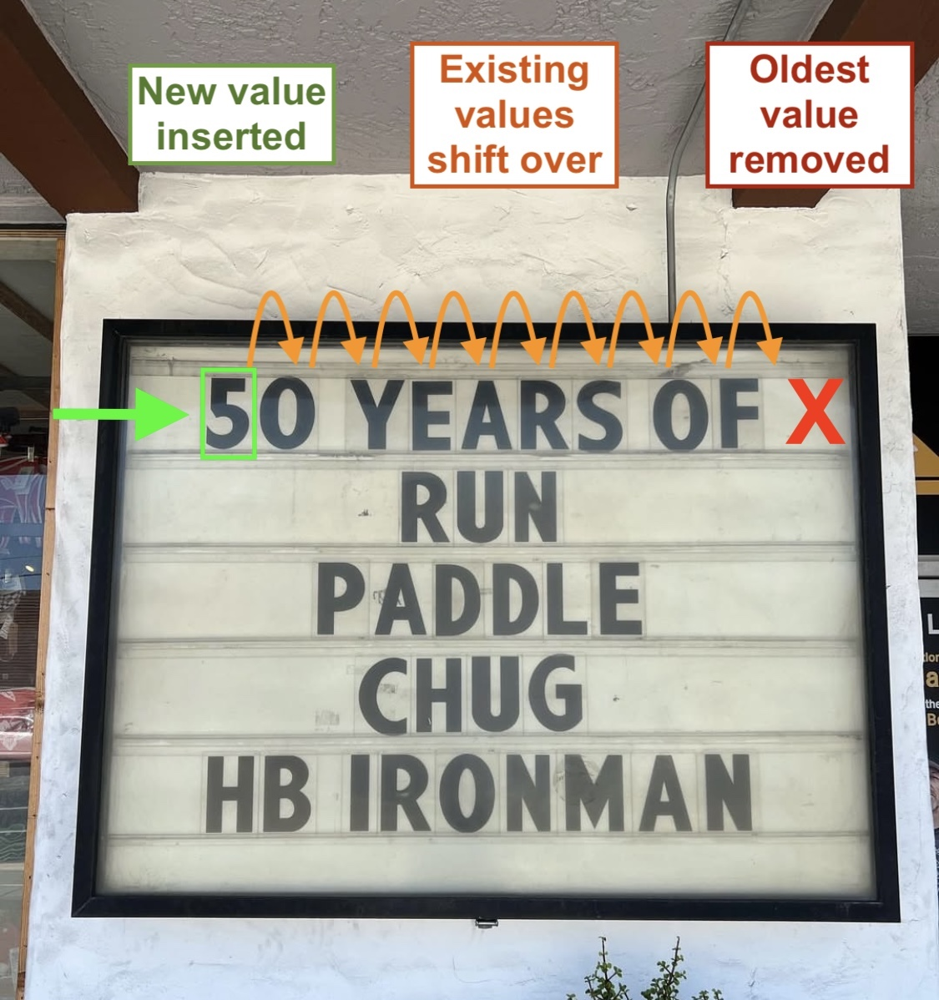
A shift register can be thought of as a simple marquee billboard, wherein new tiles can only be added from the left, and each tile can only display a 0 or 1 [photo: Spyder Surf].
So what’s the big deal?
A Serial-In, Parallel-Out (SIPO) shift register effectively transforms a single GPIO pin into many. How is this possible? A microcontroller can transmit individual bits (i.e., 0s and 1s) to a shift register hundreds of thousands of times per second; the shift register then makes the data contained in those bits available in parallel, effectively instantaneously. A clock signal (generally a square wave) determines when the shift register reads a new value, and a latch signal determines when the data will be sent to the output channels. The following animation, created by Last Minute Engineers, is an absolutely brilliant demonstration of how shift registers work.
].](shift_register.gif)
Animation showing the inner workings of a shift register. Every time the clock signal goes from high (1) to low (0), a new bit is read into the shift register; every time the latch signal goes from high to low, the full set of stored bits is transfered to the storage register, where they can be read simultaneously on each output channel [source: Last Minute Engineers].
So, if you wanted to control the ON/OFF state of 8 LEDs, rather than wiring each LED to its own GPIO pin, you could connect the LEDs to an 8-bit shift register. If you wanted to turn on the first three LEDs, you would send the following serial signal to the shift register: 1 1 1 0 0 0 0 0.
{kind=link}
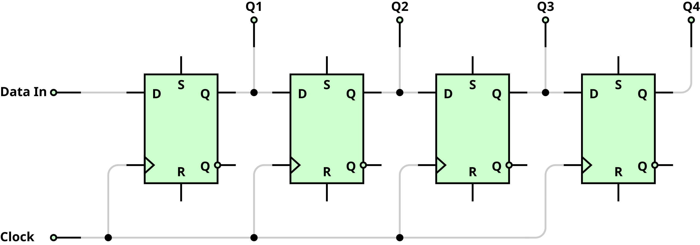
Diagram of a 4-bit shift register [source: Wikimedia Commons].
What if you wanted to control more than 8 LEDs? Perhaps many more? One of the awesome things about shift registers is that they can be connected in series; in this configuration, the oldest bit in the leading register spills over and becomes the newest bit in the following register.
I was starting to suspect that this was probably how the LEDs on my display were being controlled: the microcontroller sends 32 bits of serial data to the first of four 8-bit shift registers connected in series; once the first shift register is full, it begins passing bits to the second, and so on, like a beautiful cascading waterfall. This would explain the small number of active GPIO pins on the microcontroller.
{kind=link}
Shift registers connected in series allow data to cascade from one to another [Source: DALL-E 3].
However, I still couldn’t explain the lack of relays: you can’t illuminate high-power LEDs using weak digital signals like these.
Well, it turns out the shift registers used in this particular application are somewhat special – they are so-called sinking current shift registers. According to the TPIC6A595 data sheet, “Outputs are low-side, open-drain DMOS transistors with output ratings of 50V and a 350mA continuous sink-current capability. When data in the output buffers is low, the DMOS-transistor outputs are off. When data is high, the DMOS-transistor outputs have sink current capability.”
This effectively means that the shift registers are able to act like relays, dictating the flow of high-voltage current to each LED channel. When the shift register output is low, the corresponding LED channel is allowed to float at 27 VDC (0 V differential voltage), and will not illuminate; when the shift register output goes high, the channel is grounded, and the LEDs illuminate.
{kind=link}
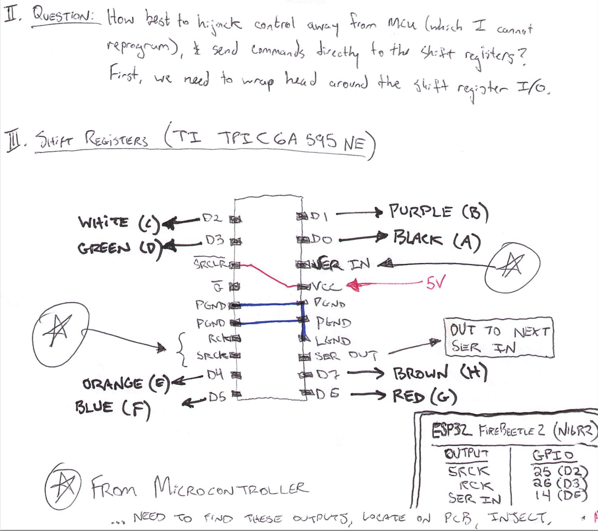
More handwritten notes. At this point, I had mostly figured out which GPIO pins the microcontroller was using to drive the shift registers; however, just to make sure, I used my backpacking headlamp to follow the copper traces from the first shift register’s inputs (SER IN, RCK, and SRCK) back to their respective sources at the microcontroller. The digital output pins D0 - D7 are each connected to a single LED channel.
Gradually, a more complete picture was coming into focus: the main power supply provides 27 VDC to illuminate the LEDs, while the BEC provides 5 VDC to power the microcontroller and shift registers. Each of the four white connectors beneath the microcontroller are responsible for delivering power to a single LED panel; each panel has either 7 or 8 channels, and each channel has 13 discrete LEDs. There is a copper trace connecting each of the four shift registers in series, allowing bits to cascade from one to the next. The microcontroller sends serial commands to the shift registers, and the shift registers dictate which LED channels are illuminated.
Knowing this, I began to formulate a plan to control each LED channel independently.
Modify Hardware
I soon realized that I wouldn’t be able to repurpose the existing microcontroller. For one, there was no obvious means of communicating with it – no USB port, no exposed UART serial pins. Further, I didn’t have any experience with this specific microcontroller, so I didn’t know which application programming interfaces (APIs) I could utilize. So, I figured, if I was going to write my own firmware anyway, I might as well remove the existing microcontroller and use one I was already familiar with.
{kind=link}
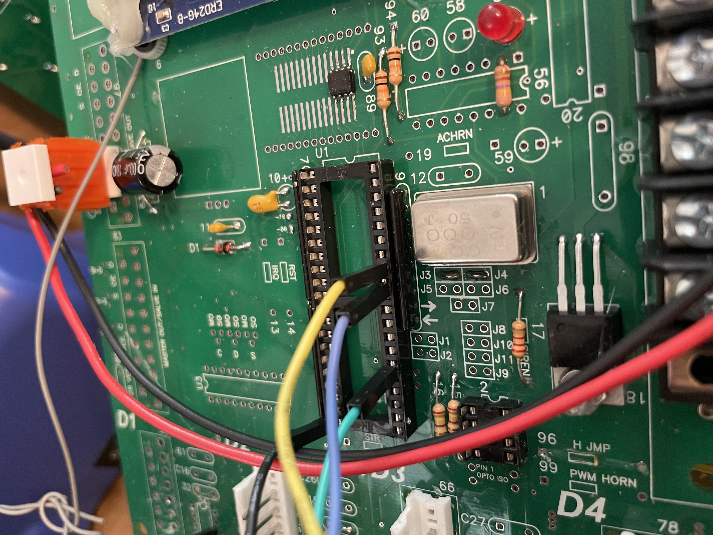
Having removed the OEM microcontroller, I was able to use jumper wires to inject serial signals from my microcontroller. Eventually, I would develop a more robust wiring scheme, but this approach worked for proof of concept purposes.
Signal Injection
Using a small flathead screwdriver, I gently removed the microcontroller from its 40-pin DIP IC socket adaptor. Admittedly, this was a little freaky; once the microcontroller was removed, we had a football team with no quarterback. When I plugged in the display, a completely random sequence of LED channels was illuminated. This was disheartening, but not altogether surprising. I pressed on.
I took a quick break from hardware hacking to figure out how to control shift registers using a microcontroller; a few Google searches and tutorials later, I felt like I was ready to give it a crack. I used jumper wires to connect my microcontroller to the appropriate pins on the socket adaptor, and deployed my code.
Nothing happend. This made sense. The display box was unplugged. Sigh.
With my microcontroller dutifully sending serial signals to the shift registers (I hoped), I took a deep breath, grabbed the display box power cable, and plugged it in.
It worked.
It f**king worked!
I can’t really express the excitement I felt in this moment. When I saw intelligible numeric digits dancing across each panel, I knew I had basically won the game – I had independent control of the LED channels. I was going to beat this thing. Everything else – writing the timer logic, enabling wireless communication, adding external interrupts – all these tasks would take time and effort, but I knew I could do them.
As it turned out, I wasn’t out of the woods, not even close – many painful setbacks were yet to come. But I got used to them. I’d throw a temper tantrum (sorry Mom and Dad), settle down, and figure out what to do next.
A Small Setback
At some point two of the LED channels on one of the panels inexplicably went dark, making the afflicted digit unreadable. This was infuriating – I had come so far! Nevertheless, there was no way I could deliver the display to the South Bay Boardriders Club in this condition. This was sort of an all-or-nothing game. So, I started tinkering.
First, I used a small flathead screwdriver to gently scrape the conformal coating off the LED solder joints on the broken panel. I then powered up the display, and used my microcontroller to send the digit 8 to this panel (or, in serial speak, 11111111) to ensure that all 7 LED channels were receiving power. The two broken channels remained dark. Using a 3V power supply, I applied voltage across each LED in the broken channels to identify the duds; this was a little sketchy, as the max rated voltage for each LED was 2.6V. I was effectively risking destroying good LEDs in order to find the bad ones, but I figured they could probably handle a momentary hit of excess voltage. LEDs are pretty sturdy. Next, I used desoldering braid to remove the solder from the anode and cathode of each broken LED, and popped them out of the board. I ordered a few replacement LEDs from DigiKey, and waited a few days. Sometimes it is good to take a little break!
This principle was flagrantly violated many times over the course of this project, but so it goes.
Anyway, when my replacement LEDs arrived, I soldered them in place, applied conformal coating, and tested the panel – good as new. Another sigh of relief.


Adding Garnishes
Having overcome the first hurdle – and the biggest hurdle – I went to work on all the little flourishes. I cleaned up the wiring and found better, more permanent places on the PCB to inject my signals; I wrote code to handle the countdown timer logic; I designed a state machine that could be controlled using toggle buttons, and wrote code that would recognize each button press as a non-blocking external interrupt; finally, I enabled wireless communication between the microcontroller I had installed inside the LED display box and a secondary external microcontroller outfitted with a series of toggle buttons.
The external microcontroller – which would be housed inside a waterproof enclosure and handle user commands – would be battery powered, so I enabled deep-sleep mode to conserve power when it was not in use. The end-user could wake the microcontroller by pressing a button.

Somewhat inconveniently, my favorite microcontroller uses 3.3V logic, but the TPIC6A595 shift register requires 5V logic. So, I soldered a logic-level converter onto a breadboard alongside my microcontroller to clean up the wiring a bit. The green and yellow wires carry the clock and latch signals, while the blue wire carries the serial input signal. The microcontroller is powered by a USB-C cable, which taps into the 5V source provided by the BEC.
The frame of the LED display box is made entirely of sheet metal; very sturdy, but also completely unamenable to radio wave transmission. I needed a way to get my wireless commands into this stubborn Faraday Cage, so I added an external antenna.
{kind=link}
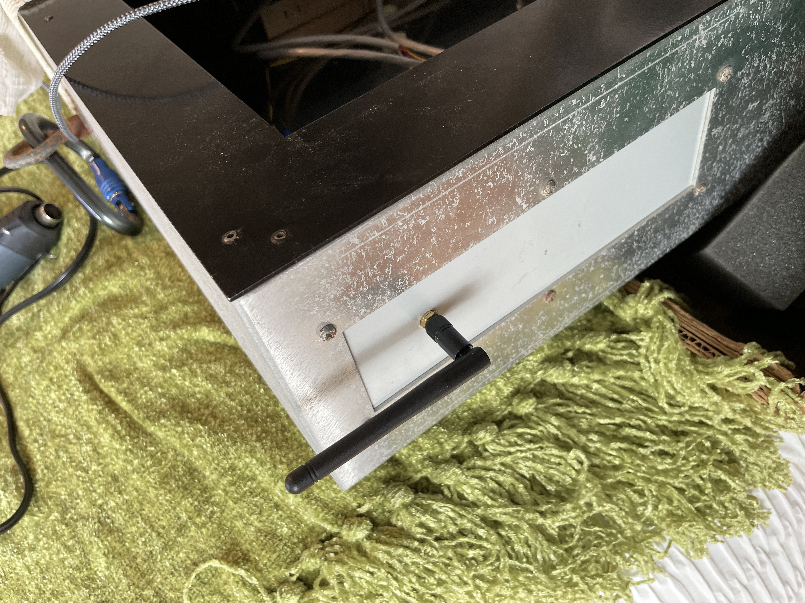
The display box itself is made of galvanized steel sheet metal, and thus constitutes a Faraday Cage; accordingly, I installed an external antenna to permit wireless communication.
Write Software
Most of the code I used for this project was adapted from similar stuff I wrote in grad school. This is one of the really cool things about software: you can gradually build up a quiver of increasingly advanced capabilities over time, and deploy them as needed in your future projects. Consequently, each successive project gets easier: the effort required to finish your $n^{th}$ project is approximately $\mathcal{O}(e^{-n})$.
Timer Logic
Have you ever wondered how a digital clock works?
If you answered yes to that, I am both impressed and a little concerned.
I certainly hadn’t given it much thought before embarking on this project; but, once I started working out the algorithm, I became increasingly absorbed. It was really fun to break down the basic behavior of a timer – something we have all used a million times – and describe it programmatically: Okay, so we decrement the one’s place of the seconds digit until we get to zero, but then what happens? We add nine to it, and decrement the ten’s place of the seconds digit…
And so on and so forth.
I’m sure there’s probably a fancier way to implement this logic, but there was no premium on computational efficiency for this particular task – it only runs once per second (which is like a million years in computer time), and involves only scalar arithmetic operations. Nested if-statements are interpretable and get the job done:
%% Set initial timer digit values
m1 = 0; % digit 1: minute (10)
m2 = 1; % digit 2: minute (1)
s1 = 1; % digit 3: second (10)
s2 = 1; % digit 4: second (1)
%% Timer Active (decrement once per second)
while ~(m1 == 0 && m2 == 0 && s1 == 0 && s2 == 0)
if (s2 > 0)
s2 = s2-1;
else
s2 = s2+9;
if (s1 > 0)
s1 = s1-1;
else
s1 = s1+5;
if (m2 > 0)
m2 = m2-1;
else
m2 = m2+9;
if (m1 > 0)
m1 = m1-1;
else
m1 = m1;
end
end
end
end
fprintf('%i%i:%i%i\n', m1, m2, s1, s2);
pause(1);
end
The logic for stopwatch mode was mostly the same, with a few sign changes.
Numeric Digits
In order to display digits on each of the four panels of the LED display, I needed to figure out what sequences of bits corresponded to the numbers 0 through 9. This wasn’t particularly challenging once I realized that the LED channels were arranged in a counter-clockwise fashion around each digit. The following table shows how to express each digit using either binary or hexidecimal serial commands.
{kind=link}
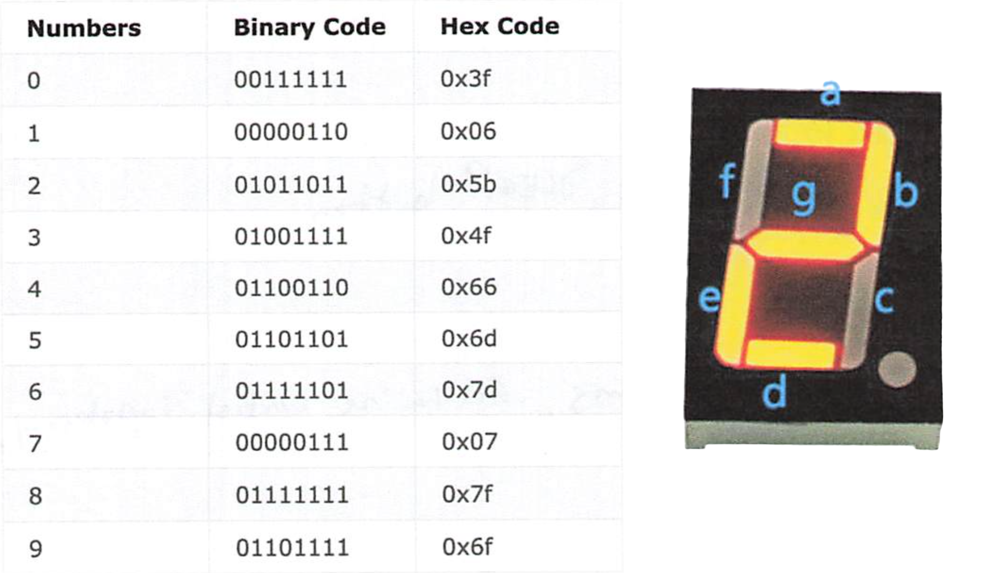
A useful cheat sheet that illustrates how to create numeric digits on a 7-segment display, using either binary or hex serial commands.
Build Controller
This stage of the project was notably less exciting for me. I knew I had already overcome the biggest challenges, and the ones that remained were all fairly pedestrian: wire cutting, soldering, and repurposing code I had already written for other projects. At this point, I had been working on this project off-and-on for a few weeks, and I was pretty eager to wrap things up.
I think most engineering projects follow an arc like this. At first you’re really excited, eager to tackle a new and interesting problem. Gradually, you realize how much work will be involved. You wonder whether you can even solve the problem. You experience a setback or two. You spiral into disillusionment. But, eventually, you experience a breakthrough! You become momentarily reinvigorated, only to realize that there is still an absurd amount of work left to do. You have already invested far too much time to quit now, so you grind out the remainder of the project.
One of my favorite engineering content creators, Daniel Riley (@rctestflight), illustrated a similar narrative arc which he called The Project Curve.
{kind=link}
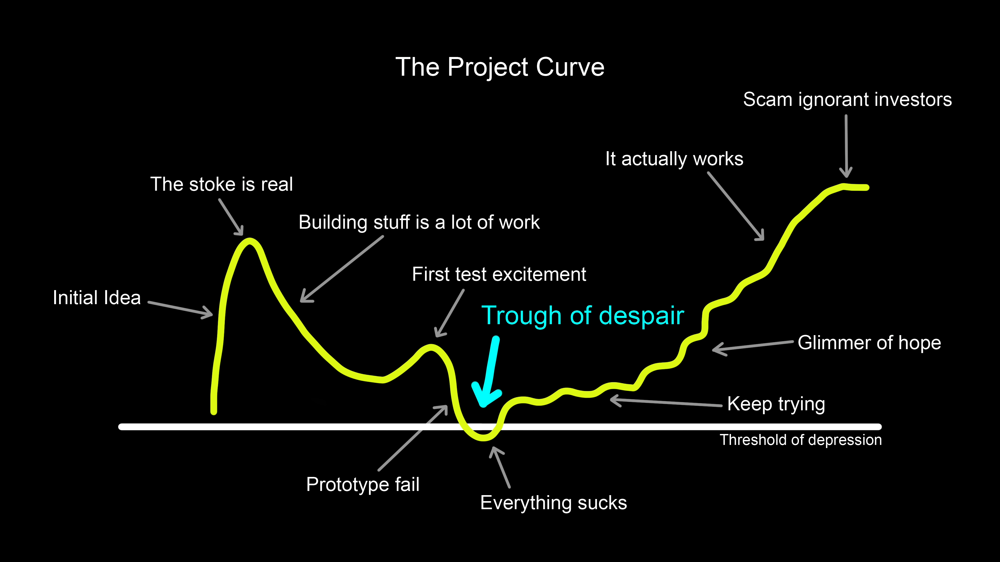
The Project Curve, featuring the Trough of Despair [source: rctestflight].
Final Stretch
In any case, I still had a fair bit of work to do. This was my basic sequence of tasks:
- Permanently install internal microcontroller, solder connectors.
- Apply conformal coating to any soldered joints.
- Implement timer logic wirelessly on external microcontroller.
- Handle button presses using external interrupts (non-blocking).
- Design state machine (i.e. if Button_A pressed, then…).
- Test all buttons.
- Cut holes in enclosure, install buttons and pass-throughs.
{kind=link}
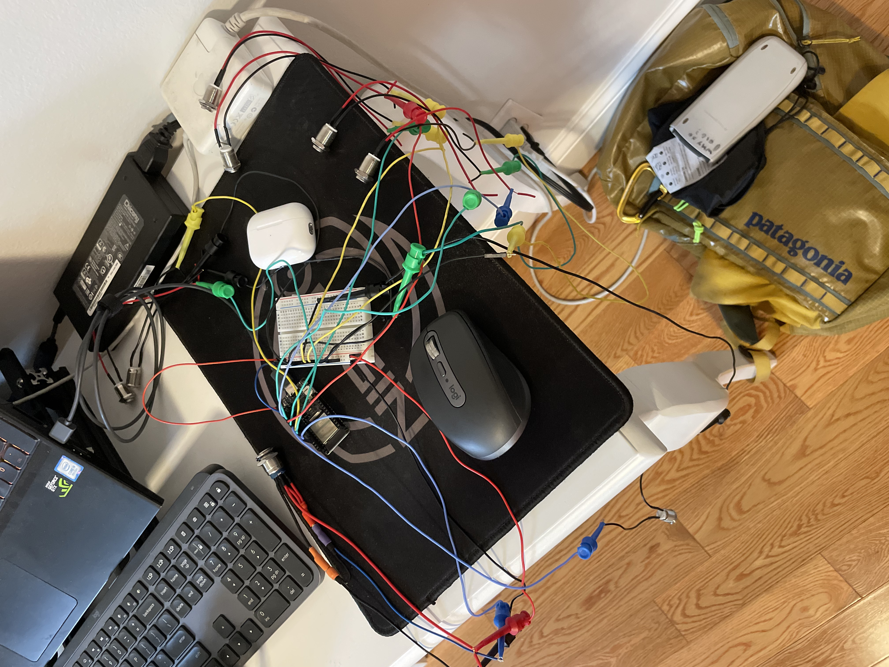
Before you solder your buttons into a fancy waterproof enclosure, it is good to make sure they work! This is what the chaotic prototyping stage looks like.
The external controller itself was nothing fancy – I ordered a waterproof enclosure big enough to hold a microcontroller, a LiPo battery, and the inevitable tangled mess of wires connecting the buttons to the microcontroller. I drilled nine holes in the enclosure lid for the buttons, and one in the side wall of the base for a USB-C charging port. I soldered 3.5mm bullet connectors to the button wires to facilitate connections, wired everything up, slapped the lid on, and bada bing bada boom we had a controller.
Stress Testing
When you are building a device that will eventually be used by someone else, you have to think very carefully about all the ways in which things could go wrong. Or, you can simply go nuts and subject your device to unadulterated chaos. I took the latter approach.
I slammed my fingers on the controller buttons in the most absurd sequences; I pressed and held multiple buttons at the same time, while simultaneously clicking others – what would happen if the user attempted to increment and decrement a digit simultaneously while holding down the start button? I needed to make sure it wasn’t possible to accidentally push the state machine into some unforseen and irrecoverable corner. Once I was satisfied that no combination of button presses would result in catastrophe, I gave the controller a gentle pat and a knowing nod of respect.
I subjected the display box to some abuse as well:
Sometimes, it is both useful and appropriate to be a bit of a menace!
Reflection
This project took me about 40 hours over four weeks to complete – not a strictly optimal use of my time, but illustrative of the commitment required to reverse engineer a modern device if you have a sufficiently sophisticated technical background.
Plus, it felt good to do something nice for my brother – he always looks out for me, so I was happy to be in a position to reciprocate.
Six months have passed since I delivered this LED display and wireless controller to the South Bay Boardriders Club, and apparently it is still working. I am stoked to have had the opportunity to leverage my engineering skills to help out, and learn some new tricks in the process.
Thanks for reading.